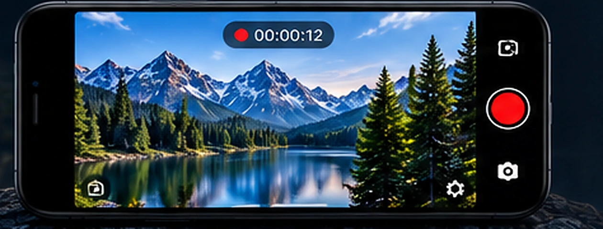

ANDROID
ContinuCam
ContinuCam is designed for dependable video recording with practical capture controls and safety-minded recording behavior.
- Purpose-built recording workflow
- Flexible recording controls
- Automatic recording safeguards
- Clean interface designed for everyday use
Google Play: public listing information will be linked here as availability expands.
ContinuCam support →